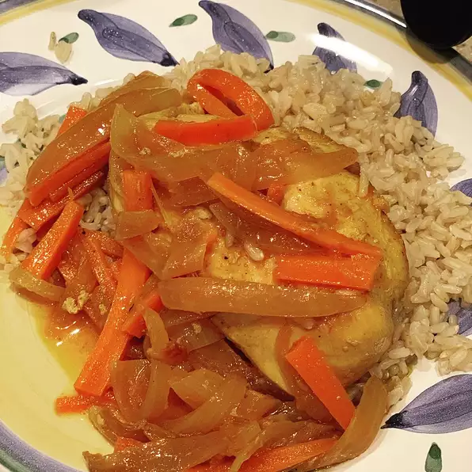

Chicken Escabeche

Chicken breasts, onions, and carrots stew in vinegar and wine for a tangy South American escabeche meal.
This is delicious served over rice or quinoa.
This dish can be served immediately but it is even better if served at room temperature after the flavors have had some time to meld.
Inredients
- 3 tablespoons extra-virgin olive oil
- 12½ ounces skinless, boneless chicken breast halves
- 13½ ounces carrots, julienned
- 13½ ounces white onion, thinly sliced
- 13½ ounces red onion, thinly sliced
- 12 bay leaves
- 11 clove garlic, minced
- 11 teaspoon ground black pepper
- 1½ teaspoon salt
- 1¼ cup red wine vinegar
- 1¼ cup dry white wine
- ¼ cup water
- teaspoon achiote powder
- ½ teaspoon cayenne pepper